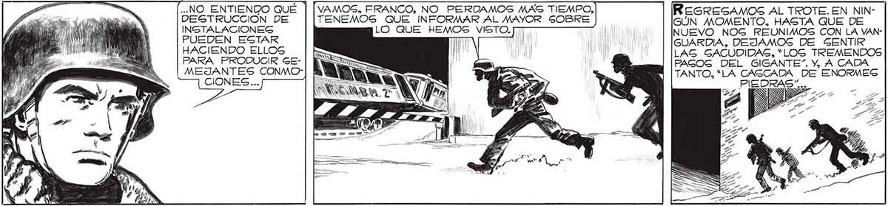
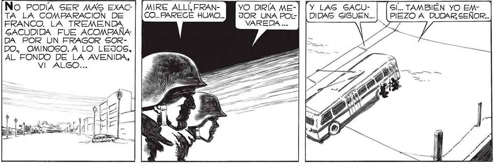

¡EL MAYOR EGTABA EN LO CIERTO! ¡EL INVAGOR EGSTA EVACUANDO SUS FUERZAS! ¡EL INVASOR SE RETIRA! Gl.¡UN RUIDO COMO SI FUERA UNA CAGCADA DE ENORMES PIEDRAS! ¡AHORA , GE GINTIO ..NO ENTIENDO QUÉ | DESTRUCCIÓN DE INSTALACIONEG ¡LO HEMOS VENCIDO,SEÑOR! ¡LO HEMOS VENCIDO! MIRE ALLÍ, FRANNo PODÍA SER MAG EXACCO... PARECE HUMO... TA LA COMPARACION DE FRANCO. LA TREMENDA GACUDIDA FUE ACOMPAÑA DA POR UN FRAGOR SORDO, OMINOSO.A LO LEJOS, AL FONDO DE LA AVENIDA, VI ALGO... JOR UNA POLVAREDA ... VAMOS, FRANCO, NO PERDAMOS MAS TIEMPO, TENEMOS QUE INFORMAR AL MAYOR SOBRE LO QUE HEMOS VISTO. PUEDEN ESTAR HACIENDO ELLOS PARA PRODUCIR GEMEJANTES CONMOCIONES... ES i Mo MAR YO DIRÍA ME-| NO EGTÉG TAN SEGURO, FRANCO... ¿NO SIENTES OTRA VEZ LAS GACUDIDAS DEL SUELO? NO TE PARECE... ¡AHÍ TIENES! ¡OTRA SACUDIDA MUCHO MAG VIOLENTA! Gl... TAMBIÉN YO EM| (PIEZO A DUDAR SEÑOR.. "Y LAS GACUDIDAS GIGUEN... LAG GACUDIDAS, “LOS TREMENDOS FAGOG DEL GIGANTE”. Y, A CADA TANTO, “LA CASCADA DE ENORMES PIEDRAS”... 185

